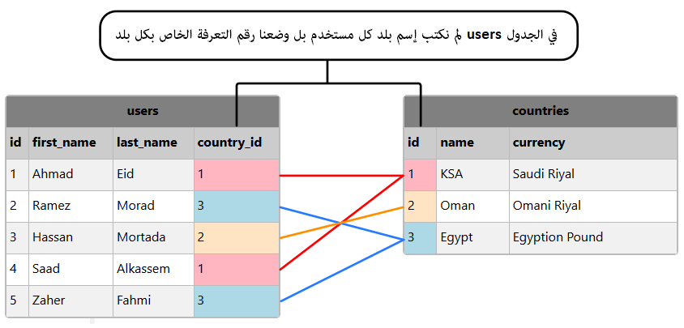
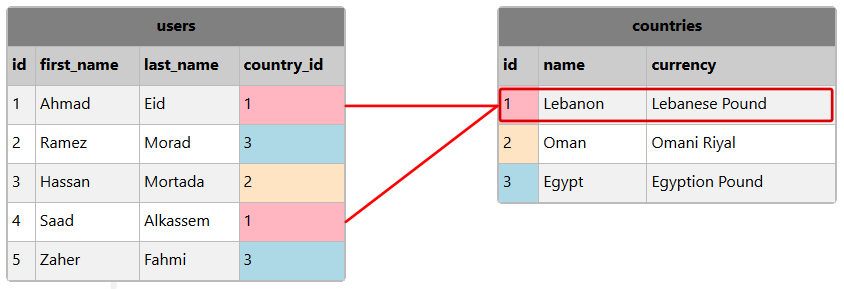
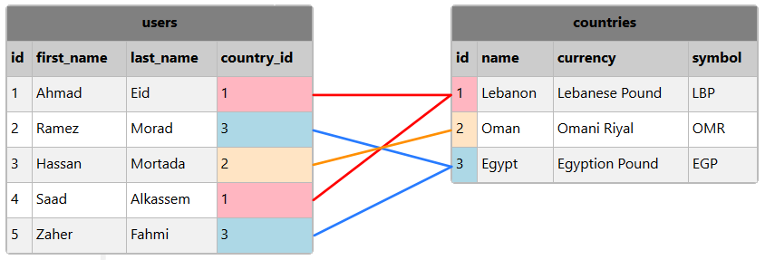

SQLكيف يتم ربط الجداول مع بعضها
لما لا نضع كل بيانات المشروع بداخل جدول واحد؟
في البداية و قبل الخوض في موضوع ربط معلومات الجداول, يجب أن تعرف لما نقوم بتوزيع بيانات المشروع على عدة جداول بدل وضعها كلها في جدول واحد.
في حال كنت ستضع كل بيانات المشروع في جدول واحد, ستواجه المشاكل التالية:
ستضطر إلى تكرار الكثير من القيم في كل سطر تضيفه.
الحقول التي لا تنوي وضع قيم فيها ستكون قيمتها NULL و بالتالي أيضاً ستجد الحقول الفارغة تتكرر في كل سطر تضيفه.
قد تحتاج إلى مئات الأعمدة حتى تتمكن من تخزين كل المعلومات.
تكرار نفس المعلومات أكثر من مرة في قاعدة البيانات يتطلب مساحة كبيرة للتخزين.
إيجاد المعلومات و إجراء عمليات عليها سيستغرق وقت أكثر كلما أصبح حجم قاعدة البيانات أكبر.
مثال
إذا كنت ستقوم بتخزين معلومات الزبائن و طلبياتهم في جدول واحد فقط كالتالي.
لاحظ كم سيكون هناك حقول فارغة و قيم متكررة لأنك ستضطر إلى أعادة إدخال نفس معلومات الزبون بجانب طلبيته.
| person_id | first_name | last_name | order_number | product_1_name | product_1_price | product_2_name | product_2_price | product_3_name | product_3_price |
| 1 | Ahmad | Alhazem | NULL | NULL | NULL | NULL | NULL | NULL | NULL |
| 1 | Ahmad | Alhazem | 100 | Computer Screen | 160 | NULL | NULL | NULL | NULL |
| 1 | Ahmad | Alhazem | 215 | Keyboard | 10 | Mouse | 7 | NULL | NULL |
إذا اطلعت جيداً على الجدول ستلاحظ أن كل فاتورة أجراها الزبون تطلبت إعادة إدخال معلوماته (إسمه, إسمه و عائلته) من جديد.
المشكلة الثانية التي تظهر هي أنه يوجد حقول كثيرة فارغة في كل سطر.
المشاكل التي تكلمنا عنها لا تقتصر على التكرار فقط, فمثلاً في حال أردنا تحديث إسم الزبون, سنضطر إلى تحديث إسمه في كل سطر خاص به و ليس مرة واحدة.
خلاصة
لا تفكر إطلاقاً بوضع كل بيانات المشروع بداخل جدول واحد, بل فكر دائماً بأن عليك توزيع بيانات المشروع على عدة جداول بشكل منطقي و مرتب.
كيف يتم ربط الجداول مع بعضها؟
في البداية عليك معرفة أن ربط الجداول مع بعضها هو شيء نحققه من خلال بناء الجداول بشكل مترابط منطقياً.
بمعنى أنك لا تقوم بكتابة أمر خاص حتى تربط قيم الجداول مع بعضها.
ما نفعله حتى نربط البيانات الموضوعة في أي جدول مع البيانات الموضوعة في جدول آخر, هو وضع عامود خاص في كل جدول تكون جميع قيمه موحدة (أي لا يوجد فيها أي تكرار) مثل العامود id الذي كنا نضعه في كل جدول ننشئه تماماً كما في المثال التالي.
مثال
في حال كانت قاعدة البيانات تحتوي على جدولين كالتالي:
إذا إفترضنا أن الجدول countries يتضمن معلومات 3 بلدان فقط كالتالي.
| countries |
| id | name | currency |
| 1 | Lebanon | Lebanese Pound |
| 2 | Oman | Omani Riyal |
| 3 | Egypt | Egyption Pound |
و إذا إفترضنا أن الجدول users يتضمن معلومات 5 مستخدمين كالتالي.
و هنا لاحظ أننا لم نكتب أسماء بلدان المستخدمين من جديد, بل وضعنا فقط رقم تعرفة البلد المذكور في الجدول countries.
| users |
| id | first_name | last_name | country_id |
| 1 | Ahmad | Eid | 1 |
| 2 | Ramez | Morad | 3 |
| 3 | Hassan | Mortada | 2 |
| 4 | Saad | Alkassem | 1 |
| 5 | Zaher | Fahmi | 3 |
الآن, إذا وضعنا الجدولين بجانب بعض, سنلاحظ كيف ربطنا قيم الجدول users بقيم الجدول countries من خلال رقم التعرفة id الخاص بكل بلد.

إذا نظرنا أولاً إلى الجدول countries سنجد أن كل سطر فيه يملك رقم id خاص.
إذا نظرنا بعدها إلى الجدول users سنجد أن العامود country_id يستخدم قيم العامود id الموجودة في الجدول countries للإشارة إلى بلدان المستخدمين.
معلومات الجدول countries نقرؤها كالتالي:
البلد رقم 1 هو السعودية KSA و عملته الربال السعودي Saudi Riyal.
البلد رقم 2 هو عمان Oman و عملته الربال السعودي Omani Riyal.
البلد رقم 3 هو مصر Egypt و عملته الجنيه المصري Egyption Pound.
إذاً أصبحنا قادرين على معرفة البلد من خلال رقم التعرفة id الخاص به.
معلومات الجدول users يمكننا قراءتها كالتالي:
المستخدم رقم 1 إسمه Ahmad Eid, و هو من السعودية KSA لأنه من البلد رقم 1.
المستخدم رقم 2 إسمه Ramez Morad, و هو من عمان Oman لأنه من البلد رقم 2.
المستخدم رقم 3 إسمه Hassan Mortada, و هو من مصر Egypt لأنه من البلد رقم 3.
المستخدم رقم 4 إسمه Saad Alkassem, و هو من السعودية KSA لأنه من البلد رقم 1.
المستخدم رقم 5 إسمه Zaher Fahmi, و هو من مصر Egypt لأنه من البلد رقم 3.
فوائد ربط الجداول مع بعضها
1- التخلص من القيم المكررة
بكل بساطة إذا نظرت للجدولين users و countries ستلاحظ أنهما لا يحتويان على أي حقول فارغة لا داعي لها, و لا يوجد قيم مكررة.
2- تحديث القيمة مرة واحدة لجميع
إذا قمت بتحديث أي معلومة عادية في الجدول countries, فإنها ستتغير بشكل تلقائي بالنسبة كل جدول مرتبط به.
أي إذا قمنا بتحديث قيمة الحقل name و الحقل currency في الجدول countries فإنها ستتحدث بشكل تلقائي بالنسبة لكل مستخدم مرتبط بها في الجدول users حيث أن جميع المستخدمين في هذا الجدول مرتبطين برقم id البلد الثابت في الجدول countries و ليس بقيمه بشكل مباشر.

3- إضافة معلومات جديدة مرة واحدة للجميع
إذا قمت بإضافة عامود جديد في الجدول countries سيتم إضافته أيضاً بالنسبة لجميع المستخدمين في الجدول users.
فمثلاً, في حال قمنا بإضافة عامود جديد في الجدول countries إسمه symbol وضعنا فيه رمز عملة كل بلد كالتالي.

عندها, بدون إجراء أي تعديل على الجدول users سنعرف رمز العملة التي يعرفها كل مستخدم من خلال رقم تعرفة البلد country_id الموضوع مسبقاً.
فعلى سبيل المثال, أي مستخدم يملك country_id يساوي 1 يعرف العملة التي يرمز لها بالحرفين LBP.
4- الدقة في حفظ المعلومات
ما سنتكلم عنه الآن, سنشرحه بتفصيل ممل لاحقاً و لكن خذ فكرة عامة عنه.
إذا تم تعيين العامود country_id كمفتاح أجنبي ( Foreign Key ) بالنسبة للعامود id الموجود في الجدول countries, عندها يصبج العامود country_id قادر على تخزين أرقام من العامود id الموجود في الجدول countries فقط.
في حالتنا, يصبح العامود country_id قادر على أن يخزن الأرقام 1 و 2 و 3 فقط.
بمعنى آخر, إذا حاولت تخزين الرقم 100 في الحقل country_id سيتم منعك من ذلك لأن الحقل id الموجود في الجدول countries لا يوجد فيه القيمة 100.
طريقة ربط القيم الموضوعة في عدة جداول عند استرجاعها
عند حفظ البيانات, شاهدنا كيف أننا نحفظها في عدة جداول بشكل منطقي و مرتب و خالي من أي تكرار.
السؤال الأهم الآن, إذا تم وضع البيانات في عدة جداول, و عند الحاجة لاسترجاعها نريد تجميعها في جدول واحد فقط كيف نفعل ذلك؟
ببساطة, عند جلب البيانات بواسطة الأمر SELECT نقوم بوضع أسماء الجداول التي سنحضر منها القيم و نذكر أسماء الأعمدة التي تربط الجداول باستخدام الكلمة ON فتقوم قاعدة البيانات بتجميع القيم الموجودة في أكثر من جدول و ترجعها كجدول واحد.
كمثال بسيط, يمكنك دمج الجدولين users و countries في جدول واحد عند جلبها كالتالي.
| id | first_name | last_name | country |
| 1 | Ahmad | Eid | Lebanon |
| 2 | Ramez | Morad | Egypt |
| 3 | Hassan | Mortada | Oman |
| 4 | Saad | Alkassem | Lebanon |
| 5 | Zaher | Fahmi | Egypt |
في الدرس التالي ستفهم أنواع العلاقات بين الجدوال حتى تفهم طريقة بناء الجداول بشكل مترابط.
من بعدها ستتعلم طريقة ربط القيم المشتركة و الموزعة على عدة جداول عند استرجاعها بتفصيل ممل أيضاً.

 محرر الويب
محرر الويب نظام الألوان
نظام الألوان محول الوحدات
محول الوحدات محلل عناوين الشبكات
محلل عناوين الشبكات